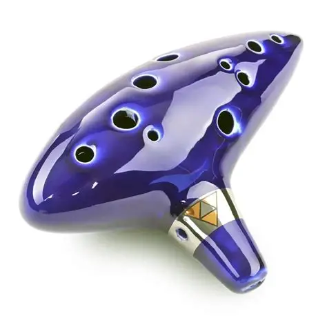

Ocarina de 12 furos afinada em C maior réplica da “Ocarina of Time”, feita por nós à pedido de todos os fãs do jogo e das músicas de Zelda. São feitas artesanalmente em cerâmica pintada e esmaltada com verniz vitral dando um efeito cristal brilhante. Estão afinadas em C (dó) Maior, com ela pode-se tocar 13 notas inteiras e seus 8 semitons. Seu som é potente,nítido e doce.
R$350,00